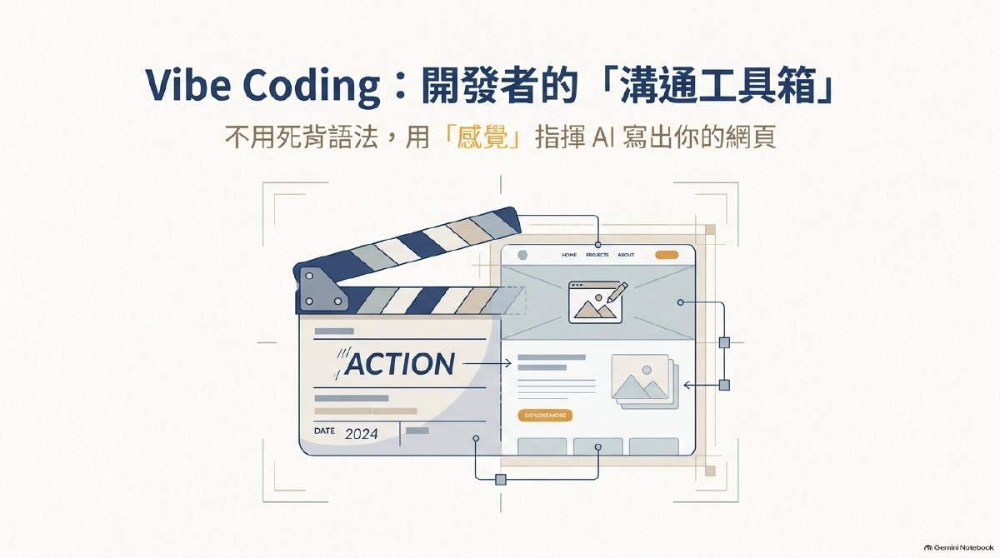

臺北市政府 AI 教學應用課程
遊戲化教學術（上）：用 Vibe Coding 做出第一個族語遊戲
今天帶走
一個能從頭玩完的互動關卡
LESSON 02
從教材，到能玩的第一版
先搞懂怎麼跟 AI 合作，再決定學生要練什麼，最後才開始做遊戲。
PART 01
先不用學程式，先學會把需求說清楚
Vibe Coding 是把重心從「自己寫每一行語法」，改成「用自然語言引導 AI 做出作品」。
老師像導演，AI 像製作助手
你決定學生要學什麼、遊戲怎麼玩、什麼才算答對。AI 負責把這些指示整理成可以操作的第一版。
例如：「請做一個族語圖片選擇遊戲，每次一題，答完馬上告訴學生對不對。」
重心放在語法
先學程式語言，再把功能一行一行寫出來
製作者要自己處理網頁結構、畫面樣式、按鈕反應與錯誤排除。
重心放在引導
先說清楚想做什麼，再請 AI 實作
可以從 ChatGPT、Gemini 或 Canva 這類對話工具開始，邊看結果、邊說出下一個修改需求。
目標、判斷、感覺與最後驗收
學習目標、族語內容、文化脈絡、遊戲體驗與答案正確性，都要由老師決定。
把清楚的指示做成可以試玩的版本
AI 可以處理畫面、按鈕、規則、計分與程式，也能依照老師指出的問題繼續修改。
1/ 7
想清楚
先決定學生要學會什麼
先有學習目標，再談畫面和功能。
製作中的工作桌
在這裡討論、預覽、請 AI 修改
對話裡看得到或玩得到，只代表作品正在製作。這個畫面通常不是交給學生的正式網址。
自己的作品原稿
把完整程式存成 index.html
資料夾裡放的是作品原稿。雙擊 index.html 可以自己試玩，也能保留每次修改前的版本。
真正交給學生的作品
發布後，別人才能用網址打開
公開網址是遊戲本身的入口。能用無痕視窗和手機打開，才算真的可以分享。
教材的總入口
Google 協作平台負責把教材整理在一起
它適合放課程說明、影片、圖片、講義與遊戲入口。它不是 AI 對話，也不等於遊戲原稿。
PART 02
先選學生要動哪一種腦力
同一份教材可以做成很多遊戲。差別不在特效，而在學生玩完以後，到底練到了什麼。
這堂先做
記憶：看到、聽到，能想起來
適合剛接觸的新詞、語音、符號與基本意思。
- 適合玩法
- Bingo、翻牌、配對
- 族語例子
- 圖片配族語、音檔配文字、中文配族語
- 對 AI 說
- 每次只出現一題，答完立刻顯示正確答案。
這堂先做
理解：知道它們為什麼放在一起
學生不只記得詞，還能看出分類、關係與先後順序。
- 適合玩法
- 分類、排序、找同類
- 族語例子
- 問候語分情境、句子排順序、人物稱謂分類
- 對 AI 說
- 學生放好後，要說明哪一項放錯以及原因。
這堂先做
應用：換一個情境，還是用得出來
把已學過的詞句放進生活情境，不只做單純選擇題。
- 適合玩法
- 情境選擇、填對話、操作解謎
- 族語例子
- 見到長輩怎麼說、依圖片補一句、完成短對話
- 對 AI 說
- 題目要給情境，回饋要說明為什麼這句適合。
分析：從線索裡找出差別與問題
學生要比較、拆解、推理，不能只靠背答案。
- 適合玩法
- 偵探、找錯、案例判讀
- 族語例子
- 找出不合情境的句子、比對兩段對話、追查錯譯
- 對 AI 說
- 答案要能從老師提供的線索判斷，不可自行補資料。
評鑑：比較幾種做法，再作決定
學生根據條件與文化脈絡，選擇較合適的表達。
- 適合玩法
- 模擬、分支選擇、角色決策
- 族語例子
- 不同對象怎麼回應、比較兩種說法、選擇並說理由
- 對 AI 說
- 判斷標準由老師提供，遊戲不能假裝只有唯一文化答案。
創造：把學過的內容重新組成作品
學生從回答者變成製作者，完成自己的對話、故事或展示。
- 適合玩法
- 建造、策展、分支故事
- 族語例子
- 排出生活對話、設計角色任務、製作主題詞彙展
- 對 AI 說
- 只能重組老師提供的族語，不能替學生發明新句子。
同一份「生活問候」教材
十二種可以直接發展的玩法
聽音找字
播放老師提供的音檔，選出對應族語。
圖文配對
把生活情境圖片和正確詞句配在一起。
場合分類
把問候語放進早上、道別、感謝等情境。
對話排序
把打亂的三句對話排回合理順序。
情境選句
看人物與場合，選一句最適合的用語。
缺句解謎
補上短對話缺少的一句，讓任務繼續。
對話偵探
從線索找出哪一句放錯情境。
找出差別
比較兩段對話，指出人物或時機的差異。
角色決策
面對不同對象，選擇較合適的回應並說理由。
分支任務
每個選擇帶到不同結果，再回看判斷依據。
對話建造
用老師提供的詞句組出一段新對話。
主題策展
挑選詞句、圖片與音檔，完成一頁主題展示。
PART 03
把教學想法寫成一張遊戲需求卡
提示詞不是越長越好。先把學生、目標、教材、操作、回饋與完成條件交代清楚，AI 才知道要做什麼。
- 01學生誰要使用
- 02目標玩完要會什麼
- 03教材只能使用哪些內容
- 04操作學生要做什麼
- 05回饋做完會知道什麼
- 06完成何時算過關
第一回合先規劃，不急著寫程式
你的 Vibe Coding 提示詞
先填左邊的需求卡
最少填教材主題、學習目標與三筆教材。
從影片示範整理出的做法
先規劃，再製作，最後真的玩一次
- 01開一個新對話或新作品資料夾
一個遊戲用一個清楚的位置，避免和其他作品混在一起。
- 02貼上剛才的規劃提示詞
先讓 AI 整理玩法、畫面、回饋與缺少的資料。
- 03回答 AI 的問題
看不懂就直接說「我是新手，請用白話一次問一題」。
- 04確認計畫，再請它開始製作
不要跳過規劃。先看玩法有沒有對準學習目標。
- 05把完整檔案存成 index.html
AI 若能直接建立檔案，就確認資料夾裡看得到這個檔名。
- 06從開始畫面玩到結果畫面
按過每一顆按鈕，記下第一個不符合預期的地方。
AI 的規劃沒有問題時，再貼這一句確認，請照剛才的計畫開始製作。
確認，請照剛才的計畫開始製作。請輸出完整的單一 index.html，不使用外部套件、登入、資料庫或付費服務。完成後請先自行檢查開始、操作、回饋、結算與重新挑戰都能使用。